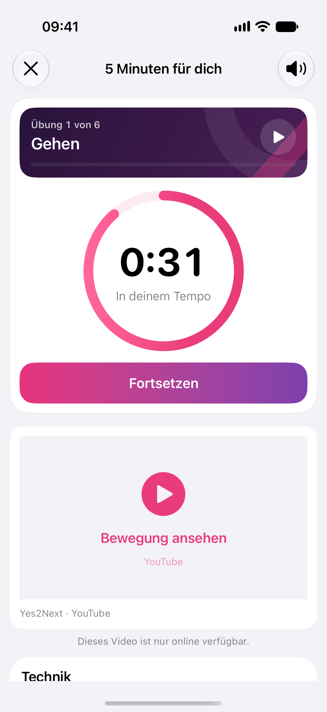
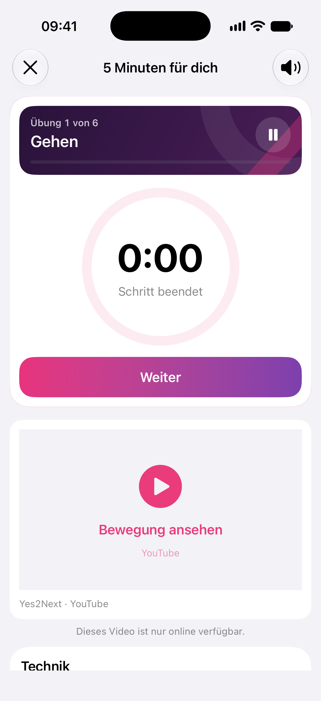

Никита Ревин, разработчик Тонуса · 18 ноября 2026 · Версия 1.7.1
Посреди упражнения по таймеру иногда нужно открыть другое приложение. Когда вернётесь в Тонус, посмотрите на кнопку под таймером. По ней видно, с какого места можно продолжить занятие.
Если вы поставили тренировку на паузу
Нажмите «Пауза» под таймером. Когда снова откроете Тонус, увидите то же упражнение и оставшееся время. Нажмите «Продолжить». Отсчёт пойдёт с того же места. Время на паузе не входит в длительность занятия, которую Тонус сохраняет после завершения тренировки.

Если интервал закончился в фоне
Если перед переключением отсчёт шёл и время упражнения истекло в фоне, после возвращения можете увидеть «Шаг завершён» и 0:00 на таймере. Тонус подождёт, пока вы нажмёте «Далее». Если по плану дальше идёт отдых, сначала начнётся интервал отдыха.
